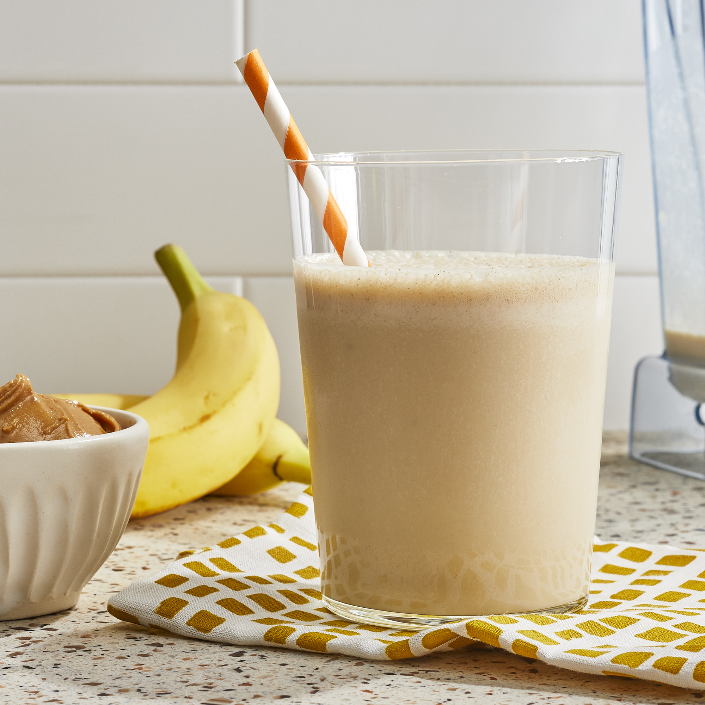

Peanut Butter Banana Smoothie

This peanut butter banana smoothie is so refreshing, and it's sweet and tasty.
Breakfast, lunch, dessert, or snack time, any time's the right time for this delicious
banana smoothie. With hundreds of ratings and reviews from our Allrecipes
community, this easy smoothie recipe is a 5-star favorite, and it's ready in less than 5 minutes.
- Total: 5 mins
- Prep: 5 mins
- servings: 4
- Yield: 4 servings
Ingredients
- 1 ½ cups all-purpose flour
- 3 ½ teaspoons baking powderk
- ¼ teaspoon salt, or more to taste
- 1 tablespoon white sugar
- 1 ¼ cups milk
- 1 egg
- 3 tablespoons butter, melted
Steps
- In a large bowl, sift together the flour, baking powder, salt and sugar. Make a well in the center and pour in the milk, egg and melted butter; mix until smooth.
- Heat a lightly oiled griddle or frying pan over medium-high heat. Pour or scoop the batter onto the griddle, using approximately 1/4 cup for each pancake. Brown on both sides and serve hot.
Nutrition Facts
Per Serving:158 calories; protein 4.5g; carbohydrates 21.7g; fat 5.9g; cholesterol 37.7mg; sodium 503.6mg.